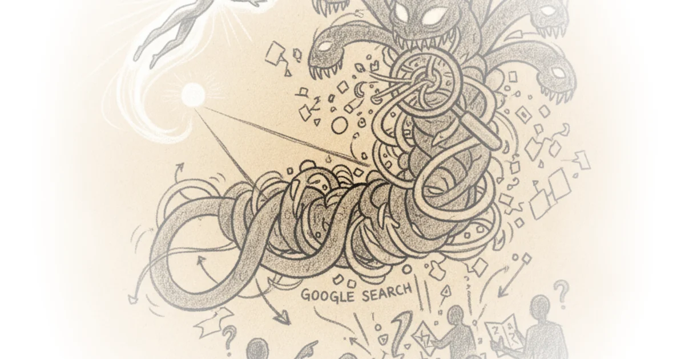
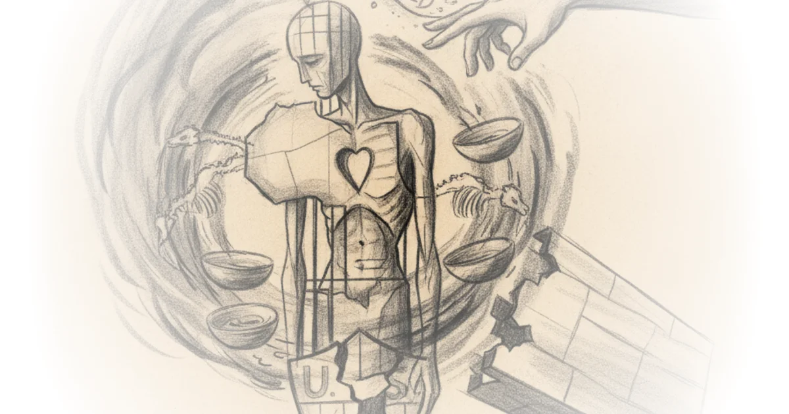

Republic of the central banker: Hoisted from the archives Brad DeLong · DeLong's Grasping Reality ·Jun 30, 2026 · 22 min read · Media Criticism
Is the vibecession real — or is the survey broken? Nate Silver · ·Jun 29, 2026 · 10 min read · Media Criticism
Gemini is better than search because Google enshittified search Cory Doctorow · Pluralistic ·Jun 29, 2026 · 13 min read · Media Criticism 
June 27, 2026 Heather Cox Richardson · Letters from an American ·Jun 27, 2026 · 11 min read · Media Criticism
Crosspost: Ben thompson: An interview with om malik about tech’s history & future Brad DeLong · DeLong's Grasping Reality ·Jun 27, 2026 · 48 min read · Media Criticism
MoldATSA - a scandal that keeps growing David Smith · Moldova Matters ·Jun 26, 2026 · 13 min read · Media Criticism
G.T. School's bet on gifted ed: Cash rewards, 2 hours of AI tutoring, no lectures Various · Reason ·Jun 24, 2026 · 20 min read · Media Criticism
An education nonprofit, secretly funded by big gas Emily Atkin · HEATED ·Jun 24, 2026 · 11 min read · Media Criticism
Many of the best security leaders aren’t on LinkedIn Ross Haleliuk · Venture in Security ·Jun 23, 2026 · 10 min read · Media Criticism
The secret origins of 'conspiracy theory' Various · Reason ·Jun 23, 2026 · 12 min read · Media Criticism
Secret emails reveal sketchy tactics in California public health's tobacco ban 'endgame' Various · Reason ·Jun 22, 2026 · 11 min read · Media Criticism
Why did we stop caring about suffering africans? Richard Hanania · ·Jun 22, 2026 · 11 min read · Media Criticism 
Stop saying half of 2026 US datacenter capacity is canceled Dylan Patel · SemiAnalysis ·Jun 18, 2026 · 26 min read · Media Criticism
AI digital sovereignty risk doesn't exist Cory Doctorow · Pluralistic ·Jun 18, 2026 · 13 min read · Media Criticism
Iran has the administration 'by the balls,' say senior U.S. Officials Mehdi Hasan · Zeteo ·Jun 18, 2026 · 11 min read · Media Criticism
The (real) dead economy theory Cory Doctorow · Pluralistic ·Jun 17, 2026 · 11 min read · Media Criticism
Google made a sad boomer mark out of me and there's nothing i can do about it Freddie deBoer · ·Jun 17, 2026 · 15 min read · Media Criticism
Calling michelle Obama a man isn't a new conspiracy. It's a lie America has used against black… Kahlil Greene · History Can't Hide ·Jun 17, 2026 · 10 min read · Media Criticism
Never cross a river four feet deep on average Scott Alexander · Astral Codex Ten ·Jun 16, 2026 · 28 min read · Media Criticism
Europe’s housing shortages are even worse than America’s Various · Works in Progress ·Jun 16, 2026 · 10 min read · Media Criticism
June 15, 2026 Heather Cox Richardson · Letters from an American ·Jun 16, 2026 · 11 min read · Media Criticism
Anthropic’s safety superpower Ben Thompson · Stratechery ·Jun 15, 2026 · 16 min read · Media Criticism
Harry potter shops raided after London centric investigation Michael Macleod · London Centric ·Jun 13, 2026 · 11 min read · Media Criticism
How Canada’s media fell for the “mass graves” story Yascha Mounk · Persuasion ·Jun 12, 2026 · 11 min read · Media Criticism